看清错误如何形成：Latent 与预测干净图逐步对照
16 个不同 Prompt，26 张已有问题图，全部导出完整 20 步。
每例包含 Latent 直接解码、当步预测干净图两种全图联图；每个错误区域另外各有一张 20 联细节图。单步图提供无损文件，网页可同步切换步骤。
下载全部 118 张 20 联图 · Prompt 与 Seed 清单 · 样本、区域坐标与定义
两种图的区别：Latent 是每次更新后的状态直接解码；预测干净图是该次计算对最终干净图的估计，未额外续生成到第 20 步。第 20 步两者一致。
纳入范围与图像保存方式
覆盖此前语义实验的 20 张问题图、最初视觉复核的全部 11 张问题图，以及后续 3 张留出案例和 2 张随机验收目标，去重后为 26 张 / 16 个 Prompt。这里的“全部”指这些已有视觉复核的问题样本，不等于 2,400 张生成图已经全部人工复核。
33 个固定裁剪区域中，31 个来自已有明确问题记录，另 2 个为同图中的不确定对照区域。包括手部、面部、牙齿、多余肢体、物体连接与接触、额头渲染问题。未将所有检测器高分图片直接认定为错误。
所有图均取自原始基线轨迹，未调用生成模型重新采样。单步全图与裁剪图使用逐像素验证过的无损 WebP；20 联图使用 384 px 缩略格和高质量 WebP。未进行锐化、增强或按步归一化。
按 Prompt 浏览
P01 · flickr-ffhq-06810
4 个已有问题 Seed；同一 Prompt 的不同 Seed 不重复计算 Prompt 数。
查看该 Prompt 原文
A vertical photograph looking slightly down at a young child with brown hair and thick bangs, smiling softly up at the camera. Both hands are raised beside the head, fingers touching the hair near the ears. The child wears a bright lime-green T-shirt with colorful cartoon figures, buttons and decorative lettering. Frame the head and torso against a patchy grassy and earthy ground, with warm natural light and flushed cheeks.A006 · 查看完整 20 步 →
Seed 999983
画面左手
4 张 20 联图
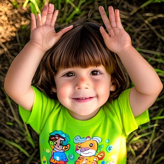
E001 · 查看完整 20 步 →
Seed 524287
画面左手、画面右手
6 张 20 联图
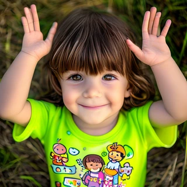
E002 · 查看完整 20 步 →
Seed 10007
画面左手
4 张 20 联图
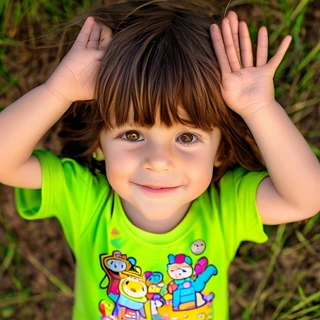
E003 · 查看完整 20 步 →
Seed 262147
画面右手
4 张 20 联图
P02 · flickr-ffhq-69377
1 个已有问题 Seed；同一 Prompt 的不同 Seed 不重复计算 Prompt 数。
查看该 Prompt 原文
A vertical chest-up portrait of an older man with shaggy gray-brown hair and a sandy-gray mustache. He smiles toward the camera, wearing a black button-down shirt and a dark tie with a large pink floral pattern. Bright natural light reveals fine facial lines and slightly flushed cheeks. The background consists of softly blurred sunlit green trees, with the subject centered and both shoulders visible.A022 · 查看完整 20 步 →
Seed 104729
额头块状渲染边界
4 张 20 联图
P03 · flickr-ffhq-35614
1 个已有问题 Seed；同一 Prompt 的不同 Seed 不重复计算 Prompt 数。
查看该 Prompt 原文
A vertical photograph of a man with short curly brown hair and rectangular metal glasses, speaking into a handheld microphone with a blue band. He wears a dark suit, pale blue shirt, patterned navy tie and a red conference lanyard with a badge. One hand holds the microphone while the other is raised in a small gesture. He looks slightly right, mouth open, against a softly lit cream wall and dark doorway.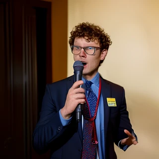
A025 · 查看完整 20 步 →
Seed 65537
画面右下手
4 张 20 联图
P04 · flickr-ffhq-53148
4 个已有问题 Seed；同一 Prompt 的不同 Seed 不重复计算 Prompt 数。
查看该 Prompt 原文
A vertical photograph of a crying baby with fine reddish-blonde hair, seated in a bright blue padded seat printed with small colorful animals. The baby wears a pale long-sleeved outfit covered in tiny pink flowers, secured by green straps and a yellow plastic buckle. The mouth is open and eyes are narrowed in distress. Strong natural light casts uneven shadows across the face, with a small section of rough stone behind the seat.A026 · 查看完整 20 步 →
Seed 42
眉间、眼眉连接、画面左下手
6 张 20 联图
E007 · 查看完整 20 步 →
Seed 104729
眉间、眼眉连接
4 张 20 联图
E008 · 查看完整 20 步 →
Seed 524287
眉间、眼眉连接
4 张 20 联图
E009 · 查看完整 20 步 →
Seed 65537
眉间、眼眉连接
4 张 20 联图
P05 · flickr-ffhq-50758
2 个已有问题 Seed；同一 Prompt 的不同 Seed 不重复计算 Prompt 数。
查看该 Prompt 原文
A horizontal playful portrait of a boy with short spiky light brown hair, facing the camera and sticking out his tongue. He raises both open hands beside his ears with the fingers spread. He wears a white button-down shirt with the cuffs open and a dark red patterned tie. Frame his head, shoulders and bent arms from slightly above, against a simple sunlit green lawn, keeping the face and fingers clearly visible.A029 · 查看完整 20 步 →
Seed 65537
画面右手
4 张 20 联图
E012 · 查看完整 20 步 →
Seed 104729
画面左侧近景手、画面右侧近景手、口内舌部
8 张 20 联图
P06 · flickr-ffhq-23505
3 个已有问题 Seed；同一 Prompt 的不同 Seed 不重复计算 Prompt 数。
查看该 Prompt 原文
A horizontal stage photograph of a woman with short silver-gray hair, speaking with both hands lifted and fingers spread. She wears a black long-sleeved top patterned with large red and cream flowers, small earrings and a thin headset microphone along her cheek. Her body faces left and her mouth is open. Frame her head, shoulders and hands against vivid blurred pink and purple illuminated panels, under warm focused stage light.A030 · 查看完整 20 步 →
Seed 42
画面左手、画面右侧近景手
6 张 20 联图
E013 · 查看完整 20 步 →
Seed 10007
第三只手与重复前臂
4 张 20 联图
E014 · 查看完整 20 步 →
Seed 999983
画面左侧远手指端
4 张 20 联图
P07 · flickr-ffhq-43713
1 个已有问题 Seed；同一 Prompt 的不同 Seed 不重复计算 Prompt 数。
查看该 Prompt 原文
A horizontal close photograph of a brown-haired child looking directly at the camera with wide eyes and a serious closed-mouth expression. The child wears a bright pink sleeveless top with tied shoulder straps and yellow stitching, and a pink wristband. Both arms are raised, holding a thick silver metal chain above the forehead between vertical posts. Direct flash brightens the face, hands and chain against a dark indoor background, with the upper arms partly cropped.A042 · 查看完整 20 步 →
Seed 42
头顶链节与握持连接
4 张 20 联图
P08 · flickr-ffhq-23465
1 个已有问题 Seed；同一 Prompt 的不同 Seed 不重复计算 Prompt 数。
查看该 Prompt 原文
A horizontal outdoor photograph of a young boy with closely cropped dark hair and dusty marks on his cheeks. He squints toward the camera with a small tight-lipped smile, wearing a gray zip-neck jacket with red stripes and embroidered red letters. Another child's pink sleeveless top and arm are cropped at the right, with a hand near his shoulder. Strong sunlight lights the main face against a softly blurred pale patterned background.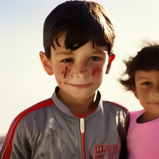
A043 · 查看完整 20 步 →
Seed 42
鼻尖、鼻翼连接
4 张 20 联图
P09 · flickr-ffhq-60230
1 个已有问题 Seed；同一 Prompt 的不同 Seed 不重复计算 Prompt 数。
查看该 Prompt 原文
A horizontal sunlit photograph of a young boy with tousled medium-brown hair, smiling with his front teeth visible. He wears a white T-shirt and looks up toward the camera. Frame his head and shoulders beside an adult whose gray-green shirt, torso and hand are cropped along the right edge, with the hand resting near the boy's shoulder. Behind is a grassy sports field with bare trees and a low pale building.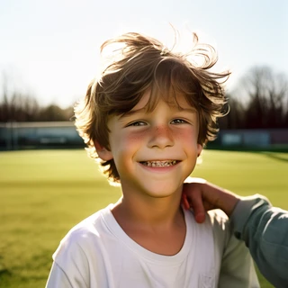
A054 · 查看完整 20 步 →
Seed 42
牙列
4 张 20 联图
P10 · flickr-ffhq-56966
1 个已有问题 Seed；同一 Prompt 的不同 Seed 不重复计算 Prompt 数。
查看该 Prompt 原文
A vertical photograph of a young girl with dark hair in a high ponytail and loose strands around her face. She wears a pink short-sleeved shirt with bold yellow stripes and holds up a slice of bread topped with corn, peas and carrot pieces using both hands. She looks toward the camera across a bright blue classroom table. A wooden chair, another blue table and pale cupboards fill the softly lit room behind.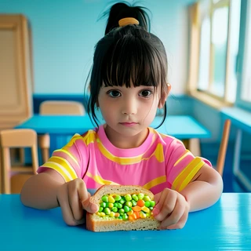
A055 · 查看完整 20 步 →
Seed 262147
画面左下握面包手
4 张 20 联图
P11 · flickr-ffhq-26913
1 个已有问题 Seed；同一 Prompt 的不同 Seed 不重复计算 Prompt 数。
查看该 Prompt 原文
A horizontal close photograph of a man with short black hair and rectangular brown glasses, playing a shiny brass trumpet with his eyes nearly closed. He wears a bright blue collared shirt. Both hands hold the instrument near the valves, while the mouthpiece rests against his lips and the tubing extends into the lower right foreground. Warm sunlight illuminates his face and fingers, with a blurred thatched roof and green stems behind.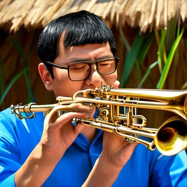
A060 · 查看完整 20 步 →
Seed 1729
乐器管路结构、手指与金属接触
6 张 20 联图
P12 · flickr-ffhq-11738
2 个已有问题 Seed；同一 Prompt 的不同 Seed 不重复计算 Prompt 数。
查看该 Prompt 原文
A vertical candid photograph of a bald man with short facial stubble speaking in front of a projected presentation. He wears a dark suit jacket, pale lavender shirt and a small white name badge. Both hands are raised at chest level with the fingers spread as he looks to the left. Frame his head and torso, with out-of-focus audience heads across the bottom and a bright projection of large pale lettering behind.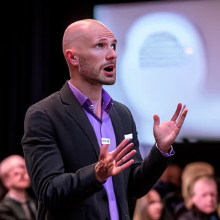
F003 · 查看完整 20 步 →
Seed 65537
画面右侧举起的手
4 张 20 联图
S021 · 查看完整 20 步 →
Seed 262147
胸前多余手与前臂
4 张 20 联图
P13 · piq23-s04-q75
1 个已有问题 Seed；同一 Prompt 的不同 Seed 不重复计算 Prompt 数。
查看该 Prompt 原文
A curly dark-haired man sits behind a wooden table, facing the camera in a navy blazer and an open-neck white shirt. His right hand is raised beside his face, palm forward with fingers spread, while his left hand rests flat on the table. His upper body occupies the center-right of the horizontal frame. Tall orange and purple glass bottles stand in the left foreground, a pale blue bottle is cut off at the right edge, and green foliage and a string of small lights cross the table. A black metal shelf, an OPEN sign and part of a dartboard appear against the pale wall behind him.F015 · 查看完整 20 步 →
Seed 1729
画面左侧举起的手、桌面上的手
6 张 20 联图
P14 · flickr-ffhq-07194
1 个已有问题 Seed；同一 Prompt 的不同 Seed 不重复计算 Prompt 数。
查看该 Prompt 原文
A vertical candid photograph of a blonde toddler seated outdoors, looking toward the camera with a serious expression and the tip of the tongue showing. The child wears an olive-green zip jacket with gray fleece lining over a yellow patterned shirt. One hand holds a large irregular pale cereal-like snack while the other rests on a wooden surface. Frame the head and torso against softly blurred bare ground, scattered leaves and a distant bench.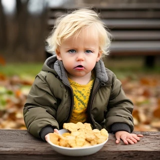
F040 · 查看完整 20 步 →
Seed 104729
画面右侧放在木面上的手
4 张 20 联图
P15 · flickr-ffhq-07577
1 个已有问题 Seed；同一 Prompt 的不同 Seed 不重复计算 Prompt 数。
查看该 Prompt 原文
A vertical photograph from above of a smiling young child with shoulder-length blonde hair and a small yellow flower clip. The child looks up directly toward the camera with bright eyes and a toothy smile, standing with arms at the sides. A knitted sleeveless top has black, brown and cream sections above yellow trousers with ruffled hems. Include the figure down to the feet against white wooden paneling and a pale shaggy rug in gentle indoor light.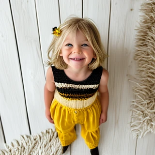
R006 · 查看完整 20 步 →
Seed 524287
牙齿
4 张 20 联图
P16 · piq23-s00-q75
1 个已有问题 Seed；同一 Prompt 的不同 Seed 不重复计算 Prompt 数。
查看该 Prompt 原文
A man with short brown hair and a beard sits beside a large window in a communal indoor seating area. He wears a loose gray-blue coat over dark clothing and raises his right hand toward the left side of the horizontal frame, palm outward. His other arm hangs down beside his leg. Pale wooden tables, high chairs and a small round potted plant fill the left background. The window runs down the right side, revealing trees and a tall modern building. The wide composition includes the seated man, part of his legs and much of the room.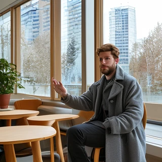
R009 · 查看完整 20 步 →
Seed 42
画面左侧抬起的手
4 张 20 联图